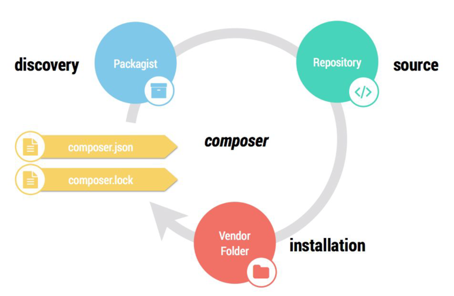
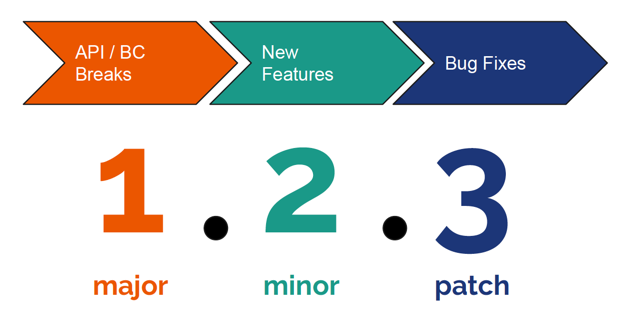

Composer
Starting a Drupal 8 Site Right
Presented by Marvin Oey
https://marvoey.github.io/reveal-presentationsWhat is Composer?
Composer is a dependency management tool for PHP.
It allows you to install, update, and load the PHP libraries that your PHP application depends on.
What does that mean?
Say you have a Drupal 7 application.
... That requires jCarousel.
which is a third party, external dependency.
You download the tarball, decompress, move it into place. Voila!
Easy right?
Except when it isn't.
Versions matter
Your hypothetical Drupal 7 site requires:
- Drupal Core, which requires jQuery 1.2.0
- jCarousel, which requires jQuery 1.3.0
1.2.0 != 1.3.0
What do you do?
In Drupal 7 you would use:
- Various contributed modules
- Hacky workarounds to load multiple versions of jQuery.
That worked for dealing with a single library incompatibility.
Enter Drupal 8
...which uses lot of external dependencies
- Symfony
- Doctrine
- Twig
- Guzzle
...and a whole lot more!
This is good.
- Drupal is no longer on an island.
- Drupal is using software that is Proudly Found Elsewhere (and tested / supported elsewhere)
- No more reinventing the wheel!
But it gets complicated pretty fast.
Drupal core requires
- Symfony components
- And dozens of other things
- Which in turn require more things
Drush requires
- Symfony Yaml
- And dozens of other things
- Which in turn require more things
- CSV Serialization module, which requires League CSV
- Views Slideshow module, which requires ...
- jQuery Cycle, which requires jQuery
- Bootstrap theme, which requires jQuery.
- Guzzle (for a custom module), which requires PSR HTTP message.
...and the list goes on.
So how does it work?
Dependency management is a fundamental part of software development
- Javascript:
- npm
- Yarn
- Bower
- Ruby
- Bundler
- PHP
- Composer
Demo time.
Install Composer
- Download Composer getcomposer.org
- Execute command...
php -r "copy('https://getcomposer.org/installer', 'composer-setup.php');"
php -r "if (hash_file('SHA384', 'composer-setup.php') === '544e09ee996cdf60ece3804abc52599c22b1f40f4323403c44d44fdfdd586475ca9813a858088ffbc1f233e9b180f061') { echo 'Installer verified'; } else { echo 'Installer corrupt'; unlink('composer-setup.php'); } echo PHP_EOL;"
php composer-setup.php
php -r "unlink('composer-setup.php');"
chmod 755 composer.phar
If you are a Homebrew user on Mac OS
brew install composerNow we can create a PHP project from scratch
Not Drupal, Just a directory and an empty PHP file
# Make a directory.
$ mkdir demo
$ cd demo
# Create an empty file.
$ touch index.phpSo now we have...
$ tree
. demo
└── index.php...and we can initialize Composer with:
$ composer initwhich creates a composer.json file
Let's add a logging feature
Check if a PHP library already exists
packagist.org
Require the package
$ composer require monolog/monologThis command discovers the library, determines correct version, and downloads it.
What just happened?

demo
├── composer.json
├── composer.lock
├── index.php
└── vendor
├── autoload.php
├── composer
├── monolog
└── psr
demo/vendor/monolog
└── monolog
├── CHANGELOG.md
├── LICENSE
├── README.md
├── composer.json
├── doc
│ ├── 01-usage.md
│ ├── 02-handlers-formatters-processors.md
│ ├── 03-utilities.md
│ ├── 04-extending.md
│ └── sockets.md
├── phpunit.xml.dist
├── src
│ └── Monolog
└── tests
└── MonologLet's implement it!
// Require Composer's autoloader.
require __DIR__ . "/vendor/autoload.php";
use Monolog\Logger;
use Monolog\Handler\StreamHandler;
// Create a logger
$log = new Logger('my-log');
$log->pushHandler(new StreamHandler(__DIR__ . "/my.log", Logger::WARNING));
// Log a message!
$log->error('I did it!');Execute our script
# Execute the script.
$ php -f index.phpCheck to see if it works
# Look in the log file.
$ cat my.log
[2018-03-25 12:05:00] my-log.ERROR: I did it! [] []Let's add one more
PHP Codesniffer
We use it during development only to make sure our code is nicely formatted. We don’t need it to run our logger.
Require a dev dependency
$ composer require squizlabs/php_codesniffer --devWhich adds new files
demo
├── composer.json
├── composer.lock
├── index.php
├── my.log
└── vendor
├── autoload.php
├── bin
│ ├── phpcbf -> ../squizlabs/php_codesniffer/bin/phpcbf
│ └── phpcs -> ../squizlabs/php_codesniffer/bin/phpcs
├── composer
│ ├── ClassLoader.php
│ ├── LICENSE
│ ├── autoload_classmap.php
│ ├── autoload_namespaces.php
│ ├── autoload_psr4.php
│ ├── autoload_real.php
│ ├── autoload_static.php
│ └── installed.json
├── monolog
│ └── monolog
├── psr
│ └── log
└── squizlabs
└── php_codesnifferWhich means you can do things like
$ ./vendor/bin/phpcs --standard=PSR2 index.php
FILE: ...rojects/drupal-vm/vm-sites/meetups/2018-10-16-epam-composer/demo/index.php
--------------------------------------------------------------------------------
FOUND 1 ERROR AFFECTING 1 LINE
--------------------------------------------------------------------------------
13 | ERROR | [x] Expected 1 newline at end of file; 0 found
--------------------------------------------------------------------------------
PHPCBF CAN FIX THE 1 MARKED SNIFF VIOLATIONS AUTOMATICALLY
--------------------------------------------------------------------------------
Time: 80ms; Memory: 4MbIn less than 10 commands, we built a logging app from scratch
$ mkdir my-new-project
$ cd my-new-project
$ touch index.php
$ composer init
$ composer require monolog/monolog
# Wrote a few PHP lines.
$ php -f index.php
$ cat my.log
$ composer require squizlabs/php_codesniffer --dev
$ ./vendor/bin/phpcs --standard=PSR2 index.phpDeeper look...
{
"name": "marvin.oey/demo",
"authors": [
{
"name": "Marvin Oey",
"email": "marvin.oey@acquia.com"
}
],
"require": {
"monolog/monolog": "^1.23"
},
"require-dev": {
"squizlabs/php_codesniffer": "^3.3"
}
}monolog/monolog package
{
"name": "monolog/monolog",
"description": "Sends your logs to files, sockets, inboxes, databases and various web services",
"keywords": ["log", "logging", "psr-3"],
"homepage": "http://github.com/Seldaek/monolog",
"type": "library",
"license": "MIT",
"authors": [
{
"name": "Jordi Boggiano",
"email": "j.boggiano@seld.be",
"homepage": "http://seld.be"
}
],
"require": {
"php": ">=5.3.0",
"psr/log": "~1.0"
},
"require-dev": {
"phpunit/phpunit": "~4.5",
"graylog2/gelf-php": "~1.0",
"sentry/sentry": "^0.13",
"ruflin/elastica": ">=0.90 <3.0",
"doctrine/couchdb": "~1.0@dev",
"aws/aws-sdk-php": "^2.4.9 || ^3.0",
"php-amqplib/php-amqplib": "~2.4",
"swiftmailer/swiftmailer": "^5.3|^6.0",
"php-console/php-console": "^3.1.3",
"phpunit/phpunit-mock-objects": "2.3.0",
"jakub-onderka/php-parallel-lint": "0.9"
},
"_": "phpunit/phpunit-mock-objects required in 2.3.0 due to https://github.com/sebastianbergmann/phpunit-mock-objects/issues/223 - needs hhvm 3.8+ on travis",
"suggest": {
"graylog2/gelf-php": "Allow sending log messages to a GrayLog2 server",
"sentry/sentry": "Allow sending log messages to a Sentry server",
"doctrine/couchdb": "Allow sending log messages to a CouchDB server",
"ruflin/elastica": "Allow sending log messages to an Elastic Search server",
"php-amqplib/php-amqplib": "Allow sending log messages to an AMQP server using php-amqplib",
"ext-amqp": "Allow sending log messages to an AMQP server (1.0+ required)",
"ext-mongo": "Allow sending log messages to a MongoDB server",
"mongodb/mongodb": "Allow sending log messages to a MongoDB server via PHP Driver",
"aws/aws-sdk-php": "Allow sending log messages to AWS services like DynamoDB",
"rollbar/rollbar": "Allow sending log messages to Rollbar",
"php-console/php-console": "Allow sending log messages to Google Chrome"
},
"autoload": {
"psr-4": {"Monolog\\": "src/Monolog"}
},
"autoload-dev": {
"psr-4": {"Monolog\\": "tests/Monolog"}
},
"provide": {
"psr/log-implementation": "1.0.0"
},
"extra": {
"branch-alias": {
"dev-master": "2.0.x-dev"
}
},
"scripts": {
"test": [
"parallel-lint . --exclude vendor",
"phpunit"
]
}
}
Version best practices.
For each dependency, we typically want the latest version that won’t break our site.
But if we just get the latest version of everything, an upstream change will break something in our site.
And if we just stick to the exact versions we use now, we get no new features or bug fixes.
Where is the balance?
Version constraints
Semantic Versioning
Version Consstraint best practices
Caret, ^
^1.2.3 is equivalent to =1.2.3,<2.0.0.
Downloads latest minor or patch version above specified version. Allows last 2 digits to go up.
This is the recommended approach!
tilde, ~
^1.2.3 is equivalent to >=1.2.3,<1.3.0.
Specifies a minimum version, but allows the last digit specified to go up.
range, >= x, <=
>=1.0
>=1.0,<=1.5
<=1.5
Specify a range of valid versions and combine multiple ranges with AND and OR operands.
asterisk, *
1.0.* is equivalent to >=1.0,<1.1.
Specify a pattern with a * wildcard.
exact version
1.0.0 will download exactly 1.0.0.
git branch
dev-master uses the master branch.
Using the prefix dev- followed by a git branch name like master will checkout that branch.
Use Caret, ^ as the default
composer.lock
Records which specific versions were actually installed.
Fundamentally changes the behavior of composer install.
If composer.lock DOES NOT exist
composer install will:
- Discover all available dependency versions
- Determine which versions of packages should be installed.
- Create composer.lock
- Install the exact dependencies defined in composer.lock.
If composer.lock DOES exist
composer install will:
- Install the exact dependencies defined in composer.lock.
Once locked in
composer update will:
- Discover all available dependency versions
- Determine which versions of packages should be installed.
CreateUpdate composer.lock- Install the exact dependencies defined in composer.lock.
Commit composer.lock, not vendor.
Composer has indicated that this is the best practice because it avoids the following problems:
- Large VCS repository size and diffs when you update code.
- Duplication of the history of all your dependencies in your own VCS.
- Adding dependencies installed via git to a git repo will show them as submodules.
If you commit composer.lock, not vendor.
Everyone gets the exact same dependencies.
But your repo is much lighter, and you avoid git submodule hell.
What?! No vendor directory?
Not having vendor assumes you have scripted deployments.
But your repo is much lighter, and you avoid git submodule hell.
Don't worry, you can still commit the vendor directory if you need to.
Drupal complicates things
- Drupal modules aren’t on Packagist
- Drupal doesn’t use Semantic Versioning. E.g., 8.x-2.0
- Drupal doesn’t install modules, themes, etc in vendor
Composer templates for Drupal projects
https://github.com/drupal-composer/drupal-project
https://github.com/acquia/lightning-project
https://github.com/acquia/blt-project
https://github.com/contentacms/contenta_jsonapi_project
$ composer create-project
drupal-composer/drupal-project:8.x-dev
some-dir
--stability dev
--no-interaction8.x-1.1
8.x-1.1.0
8.x-1.1 => 1.1.0
| Drupal.org format | Translated semver format |
|---|---|
| {core.x}-{major}.{minor}-{stability} | {major}.{minor}.0-{stability} |
| 8.x-3.4 | 3.4.0 |
| 8.x-2.10-rc2 | 2.10.0-rc2 |
| 8.x-1.0-alpha5 | 1.0.0-alpha5 |
| 7.x-1.x-dev | 1.x-dev |
THE END
Hello There
reveal.js enables you to create beautiful interactive slide decks using HTML. This presentation will show you examples of what it can do.
Vertical Slides
Slides can be nested inside of each other.
Use the Space key to navigate through all slides.
Basement Level 1
Nested slides are useful for adding additional detail underneath a high level horizontal slide.
Basement Level 2
That's it, time to go back up.
Slides
Not a coder? Not a problem. There's a fully-featured visual editor for authoring these, try it out at https://slides.com.
Point of View
Press ESC to enter the slide overview.
Hold down alt and click on any element to zoom in on it using zoom.js. Alt + click anywhere to zoom back out.
Touch Optimized
Presentations look great on touch devices, like mobile phones and tablets. Simply swipe through your slides.
Fragments
Hit the next arrow...
... to step through ...
... a fragmented slide.
Fragment Styles
There's different types of fragments, like:
grow
shrink
fade-out
fade-up (also down, left and right!)
current-visible
Highlight red blue green
Transition Styles
You can select from different transitions, like:
None -
Fade -
Slide -
Convex -
Concave -
Zoom
Themes
reveal.js comes with a few themes built in:
Black (default) -
White -
League -
Sky -
Beige -
Simple
Serif -
Blood -
Night -
Moon -
Solarized
Slide Backgrounds
Set data-background="#dddddd" on a slide to change the background color. All CSS color formats are supported.
Image Backgrounds
<section data-background="image.png">Tiled Backgrounds
<section data-background="image.png" data-background-repeat="repeat" data-background-size="100px">Video Backgrounds
<section data-background-video="video.mp4,video.webm">... and GIFs!
Background Transitions
Different background transitions are available via the backgroundTransition option. This one's called "zoom".
Reveal.configure({ backgroundTransition: 'zoom' })Background Transitions
You can override background transitions per-slide.
<section data-background-transition="zoom">Pretty Code
function linkify( selector ) {
if( supports3DTransforms ) {
var nodes = document.querySelectorAll( selector );
for( var i = 0, len = nodes.length; i < len; i++ ) {
var node = nodes[i];
if( !node.className ) {
node.className += ' roll';
}
}
}
}
Code syntax highlighting courtesy of highlight.js.
Marvelous List
- No order here
- Or here
- Or here
- Or here
Fantastic Ordered List
- One is smaller than...
- Two is smaller than...
- Three!
Tabular Tables
| Item | Value | Quantity |
|---|---|---|
| Apples | $1 | 7 |
| Lemonade | $2 | 18 |
| Bread | $3 | 2 |
Clever Quotes
These guys come in two forms, inline: The nice thing about standards is that there are so many to choose from
and block:
“For years there has been a theory that millions of monkeys typing at random on millions of typewriters would reproduce the entire works of Shakespeare. The Internet has proven this theory to be untrue.”
Intergalactic Interconnections
You can link between slides internally, like this.
Speaker View
There's a speaker view. It includes a timer, preview of the upcoming slide as well as your speaker notes.
Press the S key to try it out.
Export to PDF
Presentations can be exported to PDF, here's an example:
Global State
Set data-state="something" on a slide and "something"
will be added as a class to the document element when the slide is open. This lets you
apply broader style changes, like switching the page background.
State Events
Additionally custom events can be triggered on a per slide basis by binding to the data-state name.
Reveal.addEventListener( 'customevent', function() {
console.log( '"customevent" has fired' );
} );
Take a Moment
Press B or . on your keyboard to pause the presentation. This is helpful when you're on stage and want to take distracting slides off the screen.
Much more
- Right-to-left support
- Extensive JavaScript API
- Auto-progression
- Parallax backgrounds
- Custom keyboard bindings